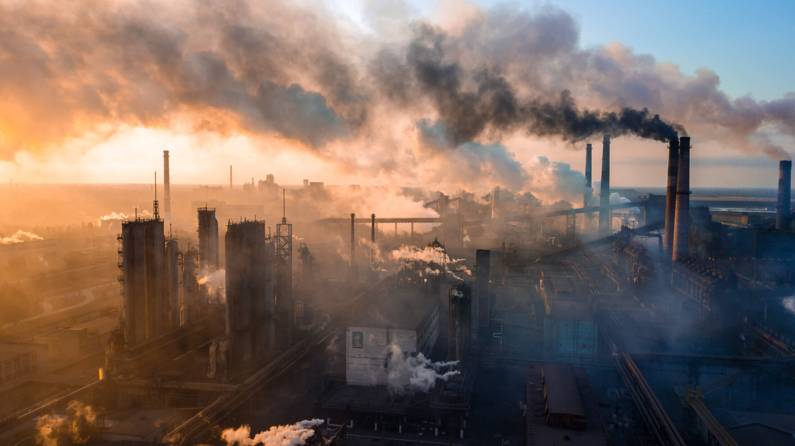
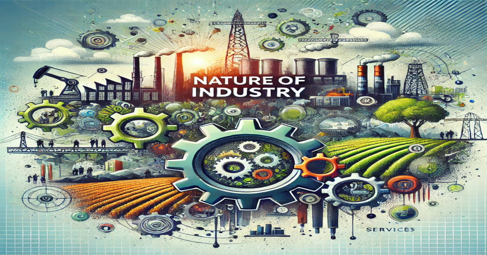

Lesson 1
INDUSTRIYA
- Tumutukoy sa pagproseso ng mga hilaw na materyal at paggawa ng mga produkto na kinakailangan para sa pampublikong pamilihan. Naglalayong maiproseso ang mga hilaw na materyal upang makabuo ng produkto na ginagamit ng tao.

Lesson 2
Sektor ng Idustriya
- Pagmimina
- Pagmamanupaktura
- Konstruksyon
- Utilities
Pagmimina
- Tumutukoy sa pagproseso ng mga hilaw na materyal at paggawa ng mga produkto na kinakailangan para sa pampublikong pamilihan
- Naglalayong maiproseso ang mga hilaw na materyal upang makabuo ng produkto na ginagamit ng tao
Pagmamanupaktura
- Paggawa ng mga produkto sa pamamagitan ng manual labor o ng mga makina
- Nagkakaroon ng pisikal o kemikal na transpormasyon ang mga materyal o bahagi nito sa pagbuo ng mga bagong produkto.
Konstruksyon
- Pagtatayo ng mga gusali, estruktura, at iba pang land improvements
Utilities
- Pagtugon ng mga pangunahing pangangailangan ng mga mamamayan tulad ng tubig, kuryente, at gas
- Paglalatag ng mga imprastraktura at angkop na teknolohiya upang maihatid ang serbisyo
Lesson 3
Kahalagahan ng Sektor ng Industriya sa Pambansang Kaunlaran
- Tumatanggap ng mga produkto mula sa sektor ng agrikultura at ng serbisyo mula sa sektor ng paglilingkod
- Nagkakaloob ng hanapbuhay sa maraming Pilipino
- Nagpapasok ng dolyar sa bansa
- Nakagagamit ng makabagong Teknolohiya
- Gumagawa ng mga intermediate products (mga materyales o produkto na ginagamit sa paggawa ng iba pang produkto; hal. wheat - to make bread)

Lesson 4
Pagkakaugnay ng Agrikultura at Industriya
Ugnayan
- Nagmumula sa agrikultura ang mga hilaw na sangkap na ginagamit sa pagbuo ng mga produkto ng industriya.
- Ang mga ginagamit na traktora, sasakyang pangingisda, at iba pang produkto ay mula sa industriya na ginagamit ng mga magsasaka upang
- magkaroon ng mataas na produksyon na magbibigay ng malaking kita sa sektor ng agrikultura.
- Ang dami ng lakas-paggawa sa mga mamimili ay nagpapakita ng lubos na pagtutulungan sa mga sector ng industriya at agrikultura.
- Ang agrikultura ang pinagmumulan ng pagkain ng mga industriya na siyang tumutugon sa mga pagkaing kinakailangan ng mga tao.
- Ang industriya ang nagbibigay ng malaking kontribusyon sa ekonomiya.
- Ang mga sangkap ay nagkakaroon ng transpormasyon dahil sa mga lakas–paggawa na gumagawa upang madagdagan ang halaga nito at lalo pang gumanda.

Lesson 5
Mga Patakarang Pang-Ekonomiya
Filipino First Policy
- Nagsimula sa programang FIlipino Muna ni Pangulong Carlos P. Garcia
- Naglalayong bigyan ng higit na malaking partisipasyon ang mga Pilipino sa pagpapatakbo ng ekonomiya
Oil Deregulation Law (R.A.8479)
- Nagbukas ng kompetisyon sa industriya ng langis
- Ang pamilihan ang nagdidikta sa presyo ng petrolyo, at hindi ito maaaring pakialaman ng gobyerno
Patakaran ng Microfinancing
- Serbisyong pinansiyal na isinasagawa ng mga bangko na magpautang na mayroong mababang interes sa mahihirap na pamilya
Patakaran sa Online Business
- Online shopping o retailing
- Online intermediary service
- Online advertisement o classified ads
- Online auction
- Sampung taong palugit sa ga dayuhang capitalist
- Nagpawalang-bisa sa RA 1180
- Binuksan ang kalakalang pagtitingi sa mga dayuhan
- Binibigyan ng karapatang bumuo ng mga pasilidad sa kanilang mga sariling pondo at palakarin ito sa humigit-kumulang na 25 taon
- Itinatag upang mapangasiwaan ang pagbebenta ng mga korporasyong pagmamay-ari ng pamahalaan sa pribadong pagmamay-ari.
- Pinasimula ni Corazon Aquino